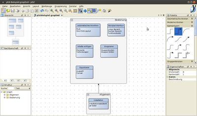
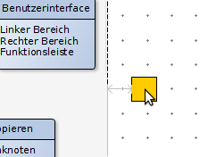
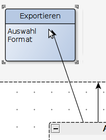
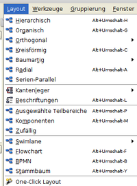
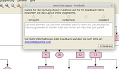
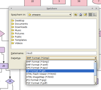

yEd
Dieser Artikel wurde für die folgenden Ubuntu-Versionen getestet:
Ubuntu 16.04 Xenial Xerus
Ubuntu 14.04 Trusty Tahr
Zum Verständnis dieses Artikels sind folgende Seiten hilfreich:
yEd  ist ein grafischer Editor zum Erstellen von Diagrammen und Struktogrammen. Das Programm eignet sich als kostenlosen Ersatz für Visio und wird von der Firma yWorks kostenfrei zur Verfügung gestellt. Die Quellen sind allerdings nicht frei verfügbar. Es wurde basierend auf der Programmiersprache Java geschrieben.
ist ein grafischer Editor zum Erstellen von Diagrammen und Struktogrammen. Das Programm eignet sich als kostenlosen Ersatz für Visio und wird von der Firma yWorks kostenfrei zur Verfügung gestellt. Die Quellen sind allerdings nicht frei verfügbar. Es wurde basierend auf der Programmiersprache Java geschrieben.
Die Software bietet folgende Funktionen:

Import von XML- und Excel-Dateien
Automatisches Anordnen von erstellen Diagrammen nach variablen Vorgaben
Exportieren nach PNG, JPG, SVG, PDF, SWF
Unterstützte Diagramm-Typen:
Flussdiagramme
Stammbäume
Semantische Netzwerke
Soziale Netzwerke
UML
BPMN
Weitere Darstellungen zu den Einsatzmöglichkeiten findet man in einer Beispielgalerie .
Installation¶
Das Programm ist kein Bestandteil der offiziellen Paketquellen. Die Installation erfolgt daher manuell (via Installationsassistent oder durch Herunterladen einer JAR-Datei).
Installationsassistent¶
yEd kann für die Installation unter Linux von der Homepage des Herstellers heruntergeladen werden. Bei dieser Variante ist bereits eine passende Java-Laufzeitumgebung für die Ausführung enthalten. Man lädt die zur eigenen Systemarchitektur passende Version herunter  . Der Dateiname lautet schematisch: yEd-VERSION_ARCHITEKTUR_setup.sh
. Der Dateiname lautet schematisch: yEd-VERSION_ARCHITEKTUR_setup.sh
Nachdem die Datei heruntergeladen wurde, muss sie anschließend ausführbar gemacht werden [2]. Dann kann die eigentliche Installation mit dem Befehl [1][3]:
sudo sh yEd-3.xx.x.x_xx-bit_setup.sh
gestartet werden. Die Installation bietet dem Benutzer während des Verlaufs an, einen Programmstarter zu erstellen, über den es leichter gefunden werden kann. Führt man die Installation ohne Root-Rechte durch (ohne sudo), wird das Programm in das Benutzerverzeichnis installiert und ist anschließend auch nur für ihn zugänglich.
Manuell¶
Sollte der Installationsassistent nicht zusagen, kann über die Download-Seite auch eine Archivdatei im ZIP-Format bezogen werden. Bei dieser Installationsmethode ist zu beachten, dass eine Java-Laufzeitumgebung (JRE) [4] vorab installiert werden muss (siehe auch Problembehebung). Die heruntergeladene Datei muss anschließend noch entpackt werden. Im entpackten Ordner findet man die zum Start notwendigen Dateien. Die Datei yed.jar muss nun noch ausführbar gemacht werden [2].
Auf Wunsch kann zusätzlich ein Programmstarter [5] angelegt werden (BENUTZERNAME und Programmpfad bitte anpassen):
[Desktop Entry] Name=yEd Comment=yEd Graph Editor Exec=java -jar /home/BENUTZERNAME/bin/yed/yed.jar Icon=/home/BENUTZERNAME/bin/yed/icons/yicon32.png Terminal=false Type=Application Categories=Graphics;
Bedienung¶
Benutzeroberfläche¶
Die Benutzeroberfläche ist in mehrere Bereiche unterteilt.
Linker Bereich¶
Der linke Bereich dient grundsätzlich der Navigation durch das geöffnete Dokument. Hierbei hat man diverse Möglichkeiten, sich durch die teilweise sehr komplexe Graphen zu hangeln.
Übersicht: hier wird das komplette Dokument angezeigt. Über das Ziehen mit der Maus wird der in der Mitte angezeigt Ausschnitt angepasst
Nachbarschaft: alle möglichen Verbindungen zwischen den angeklickten Elementen werden in diesem Bereich dargestellt. Bei einer Entität in einem Gruppenknoten wird beispielsweise der übergeordnete Gruppenknoten angezeigt.
Struktur: In einer Baumstruktur werden hier alle erstellten Elemente zusammengeführt. Beim Anklicken der einzelnen Einträge wird dieser in der Mitte ausgewählt.
Rechter Bereich¶
Auf der rechten Seite werden neue Elemente dem Graphen hinzugefügt und deren Eigenschaften festgelegt.
Palette: Alle möglichen Elemente sind dort hinterlegt. Die Struktur ist untergliedert in
Geometrische Knoten
Moderne Knoten
Kantentypen
Gruppenknoten
Swimlane- und Tabellenknoten
Personen
Computer-Netzwerk
UML
Flussdiagramm
BPMN
Entity Relationship
Aktuelle Elemente
Eigenschaften: wie der Name schon sagt, werden hier für das ausgewählte Element die Eigenschaften wie Text, Farbe, Rahmen usw. festgelegt
Menüleiste¶
Die obige Menüleiste hat die wichtigsten Funktionen für die Datei inne (Speichern usw.). Hier kann auch der Klick-Modus festgelegt werden, welcher das Verhalten der Maus für das Dokument beeinflusst:
Bearbeitungsmodus: In diesem Modus können die angewählten Elemente verschoben werden. Ebenso werden durch Ziehen Pfeile zwischen den Elementen hinzugefügt.
Navigation: Durch Ziehen mit der Maus wird durch das Dokument navigiert.
Inhalte einfügen¶
Elemente¶
 Durch Ziehen der Elemente in den Graphen werden diese hinzugefügt. Dabei kann eine automatische Ausrichtung anhand bereits existierender Elemente durchgeführt werden.
Verbindungen¶
Ist man in dem Bearbeitungsmodus, können, wie bereits erwähnt, durch Ziehen der Maus Verbindungen zwischen Elementen erstellt werden

Gruppieren¶
Eine einfache Möglichkeit, Elemente gemeinsam an zu ordnen, ist die Gruppierung.
Gruppenknoten einfügen¶
Gruppenknoten sind übergeordnete Bereiche, welche wiederum selbst Elemente oder Gruppenknoten beinhalten können. Hiermit lassen sich mannigfaltige Untergliederungen durchführen. Über einen Doppelklick kommt man explizit in den untergeordneten Bereich, mit einem Klick auf "zur oberen Ebene" kommt man wieder aus dieser heraus.
Gruppen bilden¶
Beliebige Elemente lassen sich nach der Markierung durch das Kontextmenü zu einer Gruppe zusammenfassten. Dadurch wird die dort erzeugte Struktur verankert und beim Bearbeiten der Struktur des Graphen wird die Anordnung innerhalb der Gruppe nicht weiter verändert. Durch ein Doppelklicken in die Gruppe kann kurzzeitig in diese navigiert werden, ohne die Gruppe auflösen zu müssen.
Automatisches Anordnen¶
Ist man zu faul, alle Symbole per Hand anzuordnen, bietet yEd die Möglichkeit, über diverse Automatismen eine Anordnung der Elemente nach bestimmten Vorgaben zu erreichen.
Modi¶
 Es gibt verschiedene Möglichkeiten der Anordnung. Jeder Modus hat gewisse Standard-Parameter (Abstand etc.), welche aber nach Auswahl des jeweiligen Modus angepasst werden können.
One-Click-Layout¶
 Ein spezieller Modus ist das One-Click-Layout. Hier versucht yEd, automatisch den besten Modus zu finden, und ordnet die Elemente anschließend entsprechend an.
Führt man es zum ersten Mal aus, müssen noch weitere Funktionen heruntergeladen werden. Anschliessend werden die Elemente angeordnet. Der Benutzer hat danach die Möglichkeit, die Anordnung zu bewerten und entsprechendes Feedback an yWorks weiter zu geben.
Exportieren¶
 Aufgrund der Tatsache, dass yEd auf Vektor-Grafiken setzt, gibt es mannigfaltige Möglichkeiten, ein erstelltes Layout in andere Formate zu exportieren. Nachdem man das passende Format herausgesucht hat, bekommt man noch die Möglichkeit, den Ausschnitt für den Export festzulegen (gesamtes Layout, Ausschnitt usw.) und andere Parameter wie URL-Behandlnung etc. zu setzen.
Problembehebung¶
Oracle Java oder OpenJDK?¶
Entwickelt wurde yEd mit Oracle Java. Darauf wird auch beim Programmstart über die JAR-Datei hingewiesen. Allerdings verlief ein Kurztest mit OpenJDK 8 erfolgreich. Daher spricht vermutlich nichts dagegen, das in den offiziellen Paketquellen enthaltene OpenJDK zu nutzen. Wenn es bei der Benutzung jedoch zu Problemen kommt, dann sollte Oracle Java eingesetzt werden.
 weitere Programme zum Erstellen von Diagrammen
weitere Programme zum Erstellen von Diagrammen- Erstellt mit Inyoka
-
 2004 – 2017 ubuntuusers.de • Einige Rechte vorbehalten
2004 – 2017 ubuntuusers.de • Einige Rechte vorbehalten
Lizenz • Kontakt • Datenschutz • Impressum • Serverstatus -
Serverhousing gespendet von